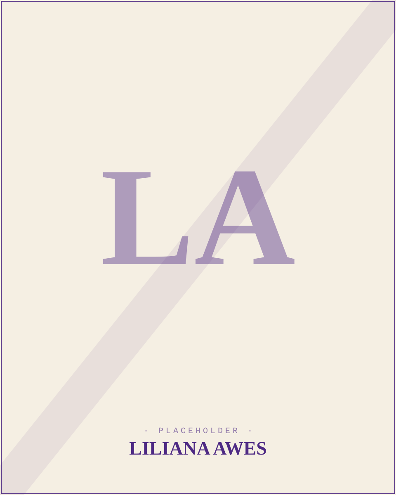

Liliana is a junior at Northwestern University studying mathematics with a passion for urban emergency medicine. As Education Secretary for NEMO, she oversees the organization and delivery of educational programming, helping develop course content and facilitate training opportunities for members.
Outside of NEMO, Liliana pursues her interests in mentorship and emergency medical care. She serves as an organic chemistry tutor through Northwestern’s Academic Support and Learning Advancement program and volunteers as a counselor on a crisis hotline. She also works as a research intern at Minneapolis’s largest public hospital, where she contributes to emergency department research and quality improvement initiatives. In her free time, she enjoys competitive jigsaw puzzling.